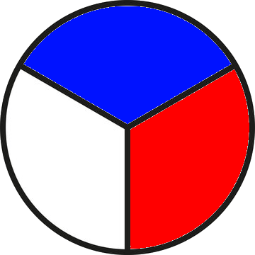

Hjólameistarinn v1.1.0 
Um höfundinn
Mirko Garofalo er doktor í íslenskri málfræði og aðjunkt í íslensku sem öðru máli við Háskóla Íslands. Mirko hefur kennt íslensku í fleiri en tíu ár, bæði í Háskóla Íslands og tungumálaskólum á borð við Mími Símenntun. Áhugasvið hans eru málvísindi, kennsla íslensku sem annars máls og máltækni.
Ef þið hafið fyrirspurnir eða athugasemdir hafið samband með því að senda póst á mig@hi.is.
Leiðbeiningar
Hjólameistarinn er vafraforrit til að þjálfa nemendur í íslensku sem öðru máli í beygingu sagna, nafnorða og lýsingarorða. Til þess að nota forritið þarf fyrst og fremst að skrifa lista af nöfnum nemenda eða þátttakenda í textaboxið hægra megin og smella svo á Vista lista. Þið þurfið að búa til nýja línu fyrir hvert nafn í textaboxinu. Eftir að þið vistið birtast nöfnin á hjólinu.
Til að snúa hjólinu smellið á Snúðu. Nafn verður valið og svo mun birtast spurning vinstra megin. Þið getið ákveðið hvaða orðflokk þið viljið þjálfa með því að haka við (eða afhaka) viðeigandi orðflokk á aðalsvæði spurninga. Þið getið ákveðið fyrirfram hvað fá nemendur margar sekúndur til að svara munnlega (10 sekúndur eru forstilltar). Þegar spurningin birtist á skjánum byrjar niðurtalning. Hægt er að stoppa niðurtalningu með því að smella á Stopp á aðalsvæði spurninga. Ef tíminn rennur út, eða ef búið er að smella á Stopp þá birtist rétt svar.
Ef þið viljið að enginn þátttakandi eigi að svara tvisvar þá þurfið að afvirkja Ekki eyða völdum nemendum úr hjólinu á hægra spjaldi. Þannig verður hver þátttakandi sem verður valinn eyðilagður af hjólinu um leið og þið snúið hjólinu aftur.
Gögn um beygingarmyndir eru sótt af Beygingarlýsingu íslensks nútímamáls (http://bin.arnastofnun.is).
Nemendalisti
Ekki eyða völdum nemendum úr hjólinu
sekúndur
Nemandi: ---
Orðflokkar:
Nafnorð
Lýsingarorð
Sagnorð
Snúðu hjólinu til að fá spurningu | --- --- |